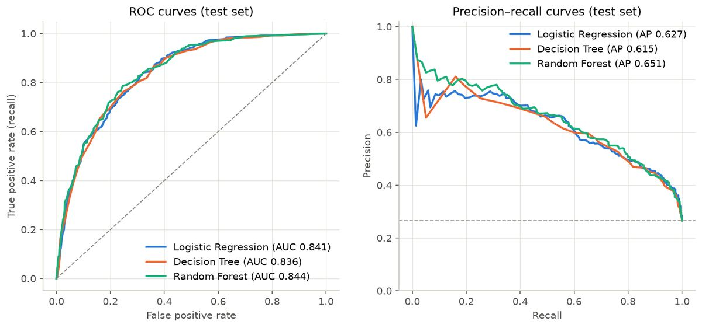

churnIQ: telecom customer churn prediction
Which telecom customers are likely to leave?
I compared Logistic Regression, Decision Tree and Random Forest on the public IBM Telco dataset, calibrated the chosen model's probabilities, and served it through a FastAPI + React app and a Streamlit prototype.

Result on 1,409 held-out customers
0.845ROC-AUC
0.714Recall
97Python tests
Calibrated Random Forest. The dataset describes a fictional telecom company created by IBM.